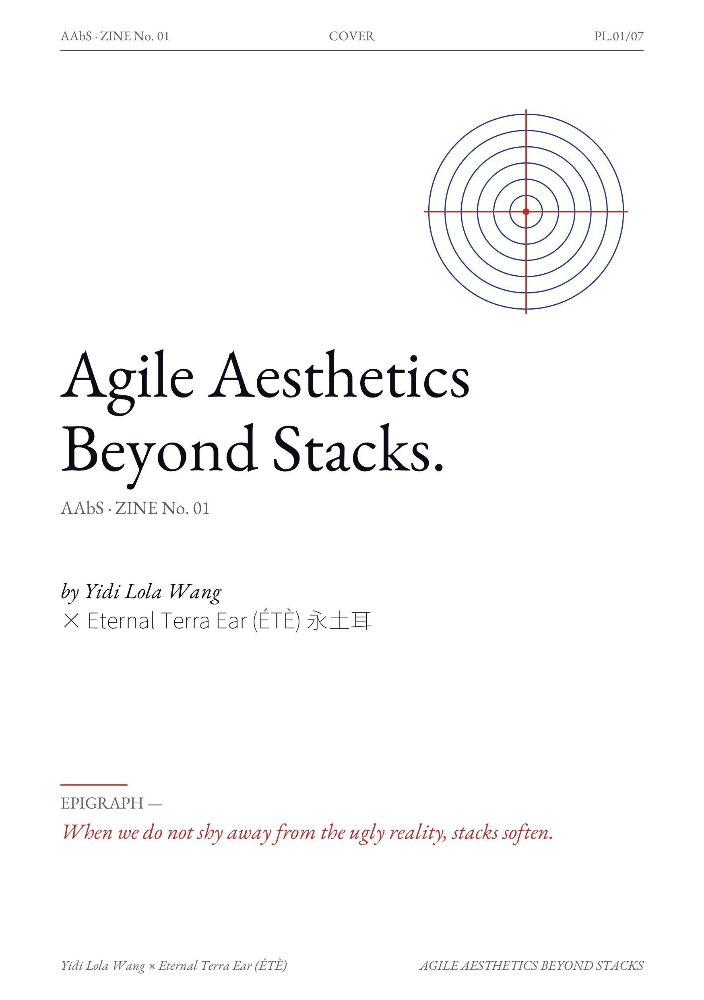
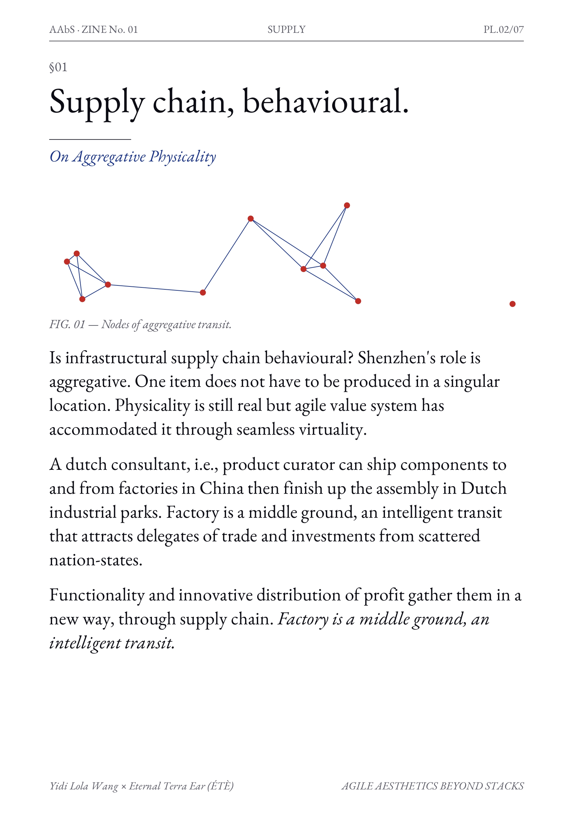
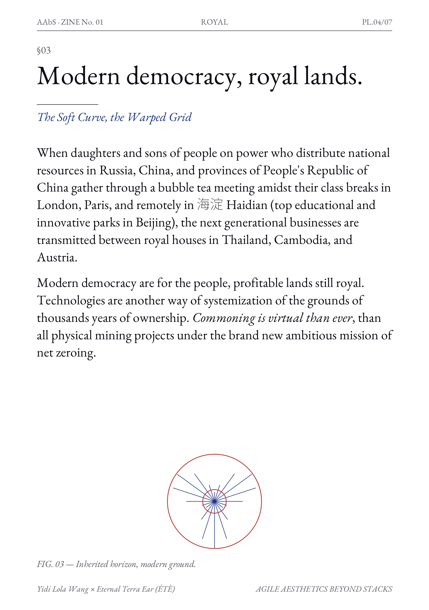
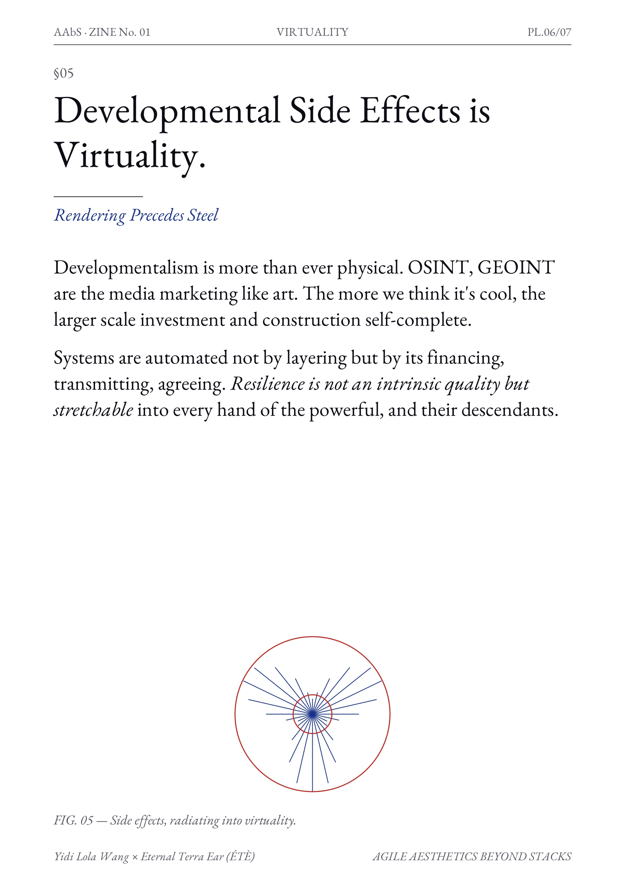

Post-Humanitarian Infrastructure
Decoding weaponized computational structures through decentralized community building. We counter extractivist surveillance with visceral data agency.
Agile Aesthetics Beyond Stacks
Navigating the Financial Relational Layer. We prioritize the friction between infrastructure and human labor, utilizing memory and organic rhythms as subversive logic.





General Team Composition
Yidi Lola Wang (China/Brussels)
Institutional Agency // System & Infrastructural Planning
Monica Avella (Colombia/London)
Legal Research // Women-led Entrepreneurship Accelerator
Fatemeh Kazemi (Iran/New York)
Logic of War Grief // Community Systems
Joaquina Salgado (Argentina/Berlin)
Relational Water Governance // Media Technology
general@ete.institute